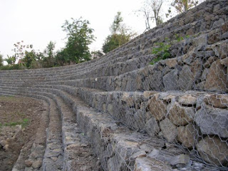
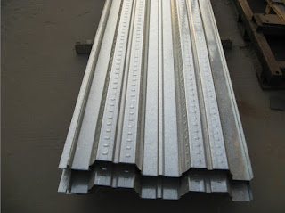

Jual Genteng Metal di Cimahi ☎ ??? (www.dis.or.id)
Pernahkah anda melihat bangunan tanpa atap? Tentu pernah bukan? Bangunan tanpa atap hanyalah bangunan yang terbengkalai dan tidak diurus oleh pemiliknya. Atap adalah bagian penting sebuah bangunan yang fungsinya untuk menaungi sebuah bangunan. Layaknya projek pembangunan yang magak di tengah jalan karena tidak mempunyai atap yang bisa dipakai di atasnya. Oleh karena itulah kita pastinya membutuhkan atap di setiap pembangunan. Ini dikarenakan setiap bangunan tentunya membutuhkan atap sebagai penutup bagian atas. Berat atap yang saya maksud disini tidaklah seberapa, karena berat yang tertopang pada galvalum tersebut sudah tersalurkan dengan baik sehingga tidak akan membebani atap maupun galvalum. Bayangkan jika atap dipasang tanpa adanya kerangka dibawahnya.
Distributor & Supplier Genteng Metal

Penggunaan zincalume memang memberikan keuntungan khusus yang tidak akan anda temukan di genteng keramik pada umumnya. Sebelum itu, kami akan menjelaskan apa itu genteng metal Cimahi dan genteng metal Cimahi pasir. Salah satu dari kelebihan genteng metal Cimahi adalah lebih membuat rumah anda bersih, rapi, lebih anti bocor, dan juga lebih ringan. Perihal harga, karena kami distributor resmi maka akan kami berikan harga pabrik untuk anda. Genteng metal dinilai lebih praktis dan lebih awet. Apakah anda sedang mencari genteng metal Cimahi berkualitas? Maka anda berada di tempat yang tepat, silakan kunjungi dis.or.id dan dapatkan info menarik khusus untuk anda yang ingin segera mengetahui keunggulan genteng metal Cimahi ini.
kami berusaha mencari kepuasan pelanggan kami. Karena kepuasan dan kepercayaan pelanggan adalah segalanya bagi kami.
Info Pemesanan Selengkapnya
Google Maps: https://www.google.com/maps/d/u/0/viewer?mid=18K_Vf8GKnjN9AtE2jUMATDSYvScojDst&ll=-7.269373870070218%2C112.655575&z=16
Note: https://www.facebook.com/notes/distributor-of-industrial-supply/pabrik-supplier-genteng-metal/1783191985314014/
Event: https://www.facebook.com/events/1480458558737554/
Portfolio Produk: https://www.facebook.com/pg/DistributorOfIndustrialSupplyDIS/photos/?tab=album&album_id=1683750531924827
Distributor & Supplier Besi Beton

Beragam jenis beton tersebut bisa diaplikasikan untuk berbagai kebutuhan pembangunan. Besi beton ulir yaitu besi beton dengan bentuk permukaan khusus bentuk sirip melintang seperti ikan ataupun dengan rusuk memanjang dan memiliki pola tertentu yang dipilih pada proses produksinya. Besi beton dapat menjadi pondasi pada bangunan yang kuat sehingga membuat bangunan yang aplikasikan besi ini dapat kokoh dan tahan lama.
Salah satu cara untuk mendapatkannya adalah dengan membeli di dis.or.id. Anda bisa langsung mengunjungi dis.or.id. Karena, disan anda bisa mendapatkan besi beton yang anda inginkan yang pastinya sesuai dengan yang anda ekpetasikan. Jadi, anda tidak perlu ragu lagi.
Distributor & Supplier Steel Grating

Grating merupakan jenis baja yang bisa dibentuk kotak-kotak ataupun bilah yang antar bagiannya saling membentuk hubungan. Salah satunya dengan menggunakan grating dalam kombinasi pembangunan. Tentunya dengan berbagai model dan tipe yang beragam.
Kini anda bisa mendapatkan steel grating dengan harga yang sangat murah namun tetap memiliki kualitas dan mutu yang terbaik dengan mengunjungi dis.or.id. Terdapat beberapa ukuran yang bisa anda pesan sesuai dengan kebutuhan pembangunan anda.
Distributor & Supplier Pipa (Hitam/Gas, Galvanis)

Setiap konstruksi bangunan pasti akan memanfaatkan jenis pipa hitam karena ia sangat kokoh, bahkan bagian luarnya telah terlapis oleh stainless steel sehingga menjadikannya tahan korosi. Terlihat dari namanya saja, pipa hitam ini memang dibuat khusus untuk kebutuhan pertambangan minyak gas, untuk itu nama lain dari pipa hitam adalah pipa gas. Ukuran pipa besi hitam terkecil adalah ½ inci, dan paling besar 40 inci. Anda dapat segera menghubungi kami untuk informasi lebih detail mengenai pemesanan pipa hitam.
Distributor & Supplier Kawat Bronjong/Gabion

Kawat bronjong berfungsi sebagai pencegah erosi. Ini seperti halnya kawat lainnya. Bentuknya sama seperti kawat pada umumnya. Hanya saja, karena ini berfungsi untuk mencegah erosi, maka kualitas kawat berbeda dengan kawat yang sering digunakan. Selain itu, kawat ini juga digunakan pada tiang penyangga bangunan besar atau tiang penyangga jembatan.
Jika anda sedang mencari kawat bronjong, anda bisa datang dan mengunjungi situs dis.or.id. Disan anda bisa mendapatkan informasi tentang kawat bronjong dengan berbagai ukuran dan harga yang pastinya sangat terjangkau. Tak hanya itu, kawat bronjong yang disediakn juga terdapat bermacam ukuran.
Distributor & Supplier WF H-beam
.jpg)
Saat ini, banyak orang yang ingin mencari jenis besi WF, terlebih ini zaman yang serba modern dan praktis. jenis besi WF banyak dimanfaatkan sebagai konstruksi baja. Besi jenis ini juga cocok untuk Anda pakai guna membangun rumah, industri, jalan raya, pagar, pabrik, dan masih banyak lagi lainnya. sementara untuk pemesanan juga mudah, Anda cukup menghubungi pihak produsen sudah bisa mendapatkannya. Sungguh mudah bukan?
Besi ini tergolong jenis besi yang ringan disertai dengan komponen yang sesuai sehingga Anda tidak perlu keberatan saat memakai jenis besi ini. Pembawaan bebannya pun juga sangat mudah dan terjamin.
Kini anda bisa mendapatkan besi WF dengan kualitas terbaik dan mutu terjamin. Harga yang murah tentunya di dis.or.id juga menjamin kualitas dan mutu terbaiknya juga.
Distributor & Supplier Expanded Metal

Expanded metal ini bisa dibilang sebagai hasil dari kemajuan teknologi yang terbuat dari baja berkadar karbon rendah dengan kekuatan yang lebih tanpa harus di las serta tanpa menggunakan sambungan. Fungsi expanded metal diantaranya untuk anak tangga pada tower dan ternyata banyak juga digunakan di dermaga/pertambangan/konstruksi lepas pantai. Sedangkan untuk keunggulannya sendiri adalah memiliki bentuk yang indah dan juga homogen, lebih vareatif dalam hal pengaplikasiannya, relatif lebih ringan, dan lebih mudah dipasang. Umumnya dipergunakan sebagai partisi pengaman gudang, railing, pelindung mesin, pagar penjara, plafond, dan lain sebagainya.
Jika anda saat ini sedang mencari dan membutuhkan expanded metal, ada baiknya anda mengunjungi dis.or.id. Terdapat berbagai macam ukuran expanded metal dengan banyak keunggulan yang bisa anda rasakan ketika mengaplikasikannya langsung pada bangunan anda. Kunjungi dis.or.id untuk memesan expanded metal dengan harga yang murah serta mutu yang terjamin.
Distributor & Supplier Plat (Hitam, Kapal, Bordes, Strip)
.JPG)
Apabila anda saat ini sedang mencari tempat atau toko yang jual plat hitam , anda dapat menemukannya di toko besi terdekat. Pada umumnya disebut plate kapal dikarenakan biasa digunakan untuk bahan pembuatan badan kapal dan mempunyai standart spesifikasi material yang beragam untuk spesifikasi. Dengan membeli secara online, anda akan lebih efektif dan efisien dalam melakukan pemesanan.
Anda bisa mendapatkan plat hitam, plat kapal, plat bordes dan plat strip dengan mengunjungi situs dis.or.id. Disini dis.or.id siap melayani anda untuk mencarikan plat yang anda inginkan.
Distributor & Supplier Floor Deck (Bondex)

Floor deck atau bondek merupakan material pengganti material konvensional yang berbentuk seperti papan lebar atau triplek. Memasang Floordeck berarti memasang bekesting tetap pada areal yang luas dalam waktu singkat dan menghemat pemakaian perancah tiang penyangga. Panel Floordeck akan membentuk lantai kerja yang aman yang berfungsi untuk pelindung cuaca lantai bawahnya. Pemakaian dari floor deck juga bisa membuat proses pengerjaan dan pembuatan dak menjadi lebih mudah, cepat dan efisien. Pasak Floordeck yang berupa rusuk-rusuk panel tertanam dengan kuat didalam beton yang membuat seluruh panel menjadi tulangan positif searah yang sangat kuat.
Floor deck berkualitas tinggi bisa anda dapatkan dengan mudah yaitu mengunjungi situs dis.or.id. Disana anda bisa mendapatkan floor deck yang anda inginkan.
Distributor & Supplier Atap Galvalum

Dengan semakin panasnya bumi, maka di ruangan pun masih terasa suhu panas. Apalagi bila ruangan tersebut tidak dilengkapi pendingin ruangan.
Akan tetapi kelebihan kayu bila dibandingkan dengan atap galvalum adalah kayu memiliki nilai yang lebih tinggi daripada galvalum. Galvalum atau biasa disebut baja ringan, terbukti mempunyai banyak kelebihan jika dibandingan dengan kayu. Kerap kali disebut baja ringan, kekuatannya tidak kalah bila dibandingkan dengan baja konvensional.
Bahkan, setiap rumah khususnya di perumahan sudah banyak yang menggunakan atap galvalum sebagai teras khusus ntuk mobilnya. Jenisnya pun sangat beragam, ukurannya pun juga banyak sehingga gampang untuk menyesuaikan kebutuhan rangka atap anda. Penggunaan galvalum terbilang lebih efektif bila dibandingkan dengan galvanis. Perbedaan ukurannya terletak pada panjang, lebar dan tebalnya.
Distributor & Supplier Atap Lengkung

Fungsi atap ialah untuk menutupi seluruh bagian atas dari sebuah bangunan. Terkadang atap lengkung ini juga sangat berguna bila dipakai dengan hal demikian.
Bentuk dari setiap atap tersebut sangat beragam. Sehingga membuat jenis atap tersebut mempunyai kelebihan dan kekurangannya sendiri.
Namun, saat ini pembahasan saya adalah atap dengan bahan galvalum dengan bentuknya yang unik. Ya, apalagi jika bukan atap lengkung. Nah, atap lengkung inilah yang berjasa membuat stadion tersebut terlihat megah. Maka anda akan mendapatkan penawaran dengan harga terjangkau.
Distributor & Supplier Truss Canal C
Sebagai informasi untuk anda, bahwa besi kanal C ini di kalangan para pekerja bangunan juga kenal dengan nama Besi CNP. Jadi ketika anda mendengan istilah CNP, diharapkan anda tidak bingung atau merasa rancu lagi, karena pada dasar nya sama. Sehingga akan awet bahkan dengan karat sekalipun. Tidak heran bila saat ini besi ini lebih banyak diminati, selain karena mudah didapatkan, memiliki kekuatan yang sama, tahan lama juga karena harga yang dinilai lebih ekonomis. Besi kanal C ini selain digunakan untuk konstruksi bangunan dalam pembuatan atap, juga bisa juga dan banyak juga yang menggunakan nya sebagai bahan otomotif, seperti kerangka mobil, sepedamotor dan onderdil lain nya. Jadi dengan kata lain, besi kanal C ini bisa dikatakan multi fungsi. Mencari kanal c galvalum berkualitas dengan harga murah? Maka dis.or.id adalah jawaban tepat untuk anda. Segala sesuatu juka diukur sesuai dengan ilmunya maka akan menghasilkan karya yang bangus serta hemat biaya. Bila anda mencari kanal c atau truss maka anda sudah datang ke tempat yang tepat. Disini kami menyediakan berbagai macam kanal c dan truss sesuai dengan kebutuhan anda.
Distributor & Supplier Hollow Galvalum

Apakah anda sedang membutuhkan atau mencari informasi seputar hollow galvalum? Penasaran dengan fungsinya? Harganya? Atau keterangan keterangan lainnya. Penggunaan besi ini sebagai rangka atap rumah sudah mulai banyak digunakan dalam beberapa tahun terakhir ini. Namun, untuk mendapatkan hollow galvalum ini anda tidak perlu repot untuk mencarinya.
Bahan jenis ini memiliki banyak sekali kelebihan, selain tahan terhadap karat, hollow galvalum juga tahan terhadap serangan rayap dan juga memiliki beban yang cukup ringan. Dengan berbagai keunggulan tersebut hollow galvalum mampu menggeser keberadaan kayu sebagai rangka atap bangunan. Sehingga tidak heran bila hollow galvalum menjadi produk paling dicari oleh masyarakat dalam industri pembangunan. Mengapa kami bisa menjual lebih murah? Karena kami adalah distributor resmi dari pabrik, sehingga anda akan mendapatkan harga pabrik langsung dari kami.
Distributor & Supplier Seng Gelombang

Atap adalah hal penting yang harus diperhatikan pada setiap bangunan. Sekarang ini telah tersedia atap bangunan berbentuk seng gelombang yang memiliki banyak keunggulan, baik dilihat dari fungsi maupun harga jual pasarnya. Andapun wajib memperhatikan bagaimana atap bagian bangunan tersebut apakah berkualitas ataukah tidak, atap dengan kualitas rendah akan beresiko kerusakan maupun kebocoran yang pasti merugikan seisi bangunan ruangan tersebut. Atap menjadi bagian penting sebuah bangunan yang harus diperhatikan. Pemasangan seng pada atap rumah haruslah dibantu dengan kerangka kayu, atau bisa juga anda memanfaatkan kerangka galvalum yang kini sudah bermunculan di masyarakat dan lebih unggul di banding kerangka kayu sendiri.
Meskipun mahal, namun kami yakin bahwa anda tidak akan menyesal dengan berbagai jenis seng gelombang yang tersedia. Salah satu distributor yang terkenal akan kualitas dan jaminannya adalah dis.or.id anda dapat mengunjungi situs tersebut dan menjelajahinya.
Distributor & Supplier Plat Seng

Anda dapat memilih lebaran atau per meter sesuai dengan fungsinya.
Harga plat galvanis lembaran dan per meter juga berbeda beda. Jika anda penasaran dengan harga plat galvanis ini, silahkan hubungi customer service kami untuk menanyakannya. Ketebalan plat tentu disesuaikan dengan kebutuhan, pastikan anda membeli plat galvanis dengan ukuran yang anda butuhkan, agar tentunya lebih efisien dalam hal anggaran.
Plat galvanis bisa anda dapatkan dengan membeli lembaran ataupun per meter, harga plat galvanis ditentukan dari ukuran yang anda inginkan. Lalu berapa harga plat galvanis 2018? Bila anda sedang mencari harga terbaru hari ini juga, anda dapat menghubungi kami karena kami menjual plat galvanis, galvalum dengan berbagai ketebalan dan ukuran.
Distributor & Supplier Besi Wiremesh

Besi wiremesh merupakan besi lembaran panjang yang disusun rapi sampai membentuk anyaman. Besi wiremesh sering di anggap banyak orang adalah besi anyam karena strukturnya yang mirip dengan anyaman. Struktur anyam dari besi wiremesh sendiri juga bermacam-macam, anda bisa sesuaikan dengan kebutuhan apakah struktur anyam kotak atau yang jajar genjang. Dengan memiliki bentuk yang mirip seperti besi anyam, pemanfaatan besi ini sangat banyak terutama dalam dunia konstruksi, salah satunya adalah sebagai plat lantai dan dak beton. Untuk bangunan bertingkat besi wiremesh yang digunakan adalah ukuran 8 sampai 10. Sedangkan untuk kebutuhan bangunan biasa menggunakan jenis wiremesh ukuran 4 sampai 6 sudah cukup kuat. Besi wiremesh diproduksi dengan sistem las otomatis sehingga hasilnya rapi dan jaraknya teratur. Jika anda membutuhkan besi ini, segera hubungi kami dikontak yang tersedia.
Distributor & Supplier Pagar BRC

British Reinforced Concrete / Pagar BRC merupakan pagar yang dibuat dari material beton dengan diameter variasi 5 mm – 8 mm tergantung dengan ukuran ketinggian. Potongan besi berdiameter tersebut kemudian digabungkan menjadi satu menggunakan mesin las wiremesh. Pemanfaatan pagar BRC sendiri tergolong sebagai pagar minimalis yang siap digunakan untuk melindungi sebuah bangunan. Apalagi mengingat kekuatan pagar BRC tidak dapat diragukan lagi, karena pagar ini diproduksi dengan baja bertegangan tinggi U55 grade dengan tegangan ijin 2900kg/cm2 sekitar 2. Jika Anda membutuhkan pagar BRC ini segera kunjungi situs resmi kami untuk informasi lebih detail. Disini kami siap menerima pesanan pembuatan pagar BRC untuk anda yang membutuhkan.
Distributor & Supplier Kawat Loket, Kawat Harmonika

Apakah anda membutuhkan kawat untuk penyekat? Kawat pagar? Penutup jendela? Atau kebutuhan lainnya? Untuk kebutuhan seperti ini anda bisa gunakan kawat loket harmonika yang memiliki bentuk seperti anyaman dan kuat. Kawat loket harmonika ini telah dimanfaatkan untuk berbagai keperluan, baik industri, konstruksi, rumahan, dan sebagainya. Kawat loket harmonika juga tahan karat, maka tak mengejutkan bila ia tahan dalam waktu yang lama. Kami menyediakan kawat harmonika dengan berbagai ukuran, tersedia ukuran kawat dengan diameter 1,5 mm sampai 4 mm dan ukuran lubang 20 mm sampai 70 mm. Anda bisa memesan kawat loket harmonika ini sesuai dengan kebutuhan, kami dapat menerima pesanan dengan lebar maks 3 meter dan panjang yg tak terhingga.
Distributor & Supplier CNP & UNP

Besi UNP atau yang biasa disebut dengan besi kanal merupakan besi yang memiliki bentuk lengkung seperti huruf U dan biasanya diaplikasikan sebagai sambungan atau dudukan atap. Selain sebagai sambungan, besi kanal UNP ini juga cocok dimanfaatkan untuk keperluan girts dan penutup sebuah dinding. Spesifikasi dari besi UNP sendiri sebenarnya hampir sama dengan besi WF, hanya saja besi UNP lebih mudah melengkung untuk itu sangat jarang pengaplikasiannya pada kolom bangunan. Sedangkan untuk kembarannya sendiri, besi CNP banyak digunakan untuk keperluan cladding dan gording. Jika besi UNP dimanfaatkan untuk keperluan penutup sebuah dinding karena bentuknya melengkung seperti huruf U, beda halnya dengan besi CNP yang sering disebut sebagai balok purlin. Besi CNP dan UNP ini sangat fleksibel, ia bahkan dapat dimodifikasi dengan plat koil yang menggunakan sistem cutting, sehingga tak heran bila banyak orang memesan jenis besi ini. Pemanfaatannya bahkan bisa untuk keperluan otomotif.
Distributor & Supplier Besi Siku

Setiap konstruksi bangunan pasti menggunakan material konstruksi besi siku ini untuk kebutuhan bagunan. Besi siku memiliki bentuk siku yang sudah didesain khusus sehingga kuat bila digunakan sebagai besi penyangga. Untuk panjangnya, pada umumnya besi siku dibuat dengan ukuran 6 meter dan ketebalan lebar yang berbeda-beda. Jika anda membutuhkan besi siku ini, segera hubungi kami! Kami menjual besi siku yang kokoh dan tahan lama. Produk besi siku yang kami tawarkan cocok untuk beragam keperluan, baik rumahan, konstruksi, industri dan sebagainya. Hubungi saja kontak yang telah tersedia untuk mengetahui informasi pemesanan lebih detail. Informasi lebih detail akan anda dapatkan dengan menghubungi kontak yang tertera pada website dis.or.id.
Distributor & Supplier Hollow (Hitam, Galvanil, Galvanis)

Sekarang ini besi hollow pemanfaatannya sudah melebihi kayu, meskipun terbuat dari besi kualitasnya pun tidak dapat diragukan lagi.Sekarang sudah banyak orang yang beralih pemanfaatan dari kayu menjadi menggunakan besi hollow.Banyak orang yang mulai beralih dari pemanfaatannya yang menggunakan kayu beralih pada hollow hitam galvanil.Besi hollow saat ini menjadi material pengganti kayu yang sangat baik. Dengan menggunakan material ini pembangunan konstruksi juga bisa selesai lebih cepat sehingga meminimalkan upah pekerja. Dis.or.id pun telah menyediakan produk besi hollow hitam galvanis ini untuk dapat anda pesan langsung! Tersedia ukuran besi hollow 40 x 40 x 2 mm x 6 Meter, 50 x 50 x 3 mm x 6 Meter hingga ukuran 150 x 150 x 5 mm x 6 meter dan masih banyak lagi. Jika anda membutuhkan besi hollow maka sebelum memesan pada kami anda harus melakukan perhitungan kebutuhan dahulu, seperti berapa panjang dan ketebalan yang diperlukan.
Distributor & Supplier Pipa Pancang

Untuk yang di bahas pertama adalah pipa pancang. Apalagi bagi Anda yang sering menangani proyek di permukaan laut, pipa pancang ini memang memiliki fungsi yang sangat penting. apalagi jika berbicara mengenai proyek di atas permukaan laut. Nah, pipa ini sendiri memiliki berbagai ukuran maupun spesifikasi lainnya. Salah satu yang di maksud adalah DIS. Di sini Anda aka mendapatkan pipa dengan kualitas terbaik dan mutu terjamin. Terlebih jika mengingat berbagai kelebihan dan fungsi nya yang bisa di terapkan di mana-mana.
Jasa Pondasi Bor (Strouss/Borepile)

Dalam pembangunan rumah, tentu saja setiap orang menginginkan hasil terbaik sehingga bisa membuatnya puas, termasuk juga untuk pengeboran pondasi. Nah, jika Anda bingung terkait hal itu, kini ada banyak jasa yang bisa menjadi jalan keluar Anda dalam pelayanan pondasi bor. Sedangkan untuk kualitas hasil pengeboran nya pun tidak perlu di pertanyakan karena bisa di jamin sempurna dan sangat tinggi. Namun perlu di ketahui pula bahwasanya selama proses akan memunculkan suara bising sekalipun tanpa getaran. Namun bisa lebih mengurangi gangguan karena tidak menimbulkan getaran. Untuk masalah kualitas hasilnya pun sama saja jadi tidak perlu khawatir. Sedangkan untuk kualitas pun tidak jauh berbeda sehingga tidak perlu di khawatirkan.
Distributor & Supplier Genset (New/Second)

Sedangkan dalam pengaplikasian tersebut, tenaga dari genset di hasilkan dari bahan bakar solar. Sedangkan dalam pembeliannya, Anda bisa memilih antara genset baru atau pun yang second.
Kalau masalah harga, memang genset cukup mahal sehingga banyak yang memilih untuk membeli yang bekas. Akan tetapi, jika menginginkan kualitas terpercaya, maka bisa juga memilih membeli yang masih baru saja. Meski demikian, masalah kualitas tidak perlu di khawatirkan karena sekalipun sudah bekas, tetap saja kondisinya tidak kalah dari genset yang baru.
Distributor & Supplier UPS

Kalau menyebut UPS, mungkin akan banyak yang bertanya-tanya sebenarnya apa sih barang yang satu ini. Sedangkan pengertian UPS sendiri merupakan salah satu dari sekian banyak alat elektronik yang mampu di jadikan sebagai sumber listrik sementara manakala sumber utamanya terputus. Sedangkan untuk pengertiannya, UPS merupakan salah satu alat elektro yang berfungsi untuk menyimpan tenaga listrik sehingga listrik tetap bisa menyela sementara ketika sumber utama terptus. Terutama bagi para pengguna komputer yang tergantung terhadap enegi listrik. Terutama bagi yang sering menggunakan komputer. Sedangkan segi varian nya bisa jadi adalah kualitas UPS sendiri maupun kapasitas yang di miliki. Mulai dari kualitas maupun kapasitas yang di miliki. mengingat akan hal tersebut, maka Anda bisa memilih yang paling pas untuk pembeliannya. Sedangkan dalam penjualan, di sini kami menawarkan UPS dengan kualitas terjamin dan harga memadai.
Distributor & Supplier Forklift (Second)

Mulai dari industri kecil, menengah hingga yang tergolong besar. Sedangkan di sini, Anda bisa menemukan penjualan tersebut dengan kualitas barang yang memuaskan sekalipun merupakan barang second. Dengan bahan yang terjamin tersebut, tentu saja tujuan penggunaan forklif ini akan semakin memudahkan setiap aktifitas di industri Anda. Di samping itu, yang akan lebih memudahkan lagi adalah forklif yang tersedia sudah siap pakai. Apalagi, di sini yang di tawarkan adalah forklif yang siap pakai. Selanjutnya, jika forklif sudah tidak di gunakan, Anda pun bisa kembali menjualnya pada setiap distributor forklif sehingga tidak akan rugi membelinya.
Jasa Pembuatan Moulding Inject

Bagi Anda yang sedang bingung untuk membuat moulding inject, jangan khawatir karena ada solusi yang bisa Anda temukan di sini. Di sini pun Anda bisa mendapatkan jalan keluarnya. Selain itu berapa pun kebtuhan Anda, pasti bisa di layani. sedangkan bagi Anda yang sedang bingung untuk mencari ide bentuknya, jangan khawatir karena ada beberapa ide yang bisa Anda gunakan.
Jasa Pembuatan Sparepart Mesin Produksi / Alat Berat

Sparepart tentu saja sudah tidak asing lagi di dunia permesinan. Sedangkan mengingat fungsinya pun, sparepart ini cukup penting juga menjadi perhatian tersendiri. Jadi sebisa mungkin Anda harus memilih jasa terpercaya. Dengan demikian hasilnya pun akan lebih terjamin dan aman. Terkait dengan hal itu, perlu Anda ketahui bahwa pembuatan sparepart yang salah, bisa jadi akan membahayakan si pengguna. Karena itulah di perlukan pembuatan yang tepat sehingga hasilnya sempurna dan bisa bekerja secara maksimal. DIS pun juga akn menawarkan jasa yang bisa menghasilkan alat berat secara sempurna.
Jasa Service Elektronik (Kompor Gas, Dispenser, Mesin Cuci)

Dengan zaman yang semakin hari semakin maju, tentu saja alat elektro yang banyak di gunakan di masyarakat sudah semakin banyak. mengimbangi akan hal itu, jasa service pun juga kian menyebar di mana-mana. sedangkan beberapa jasa ini melayani service seperti kompor gas, dispenser maupun mesin cuci.
Sudahkah anda mengetahui arti penting dari sebuah komponen bernama atap? Keberadannya amat penting bukan? Bahkan bisa disebut kebutuhan primer setiap bangunan. Hanya bangunan yang terbengkalai yang tidak mempunyai atap. Memang, ada beberapa bangunan mewah yang sudah memakai beton sebagai atapnya. Tak terkecuali berbagai jenis atap yang sudah saya jabarkan diatas. Seperti yang saya jabarkan diatas fungsi atap sudah tidak terbantahkan dan tidak dapat digantikan lagi.